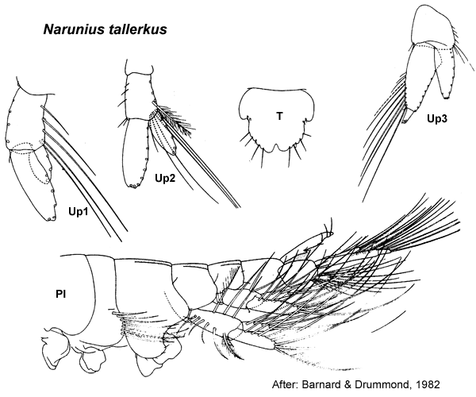

Narunius Barnard & Drummond, 1982; 111.
Type species. Narunius tallerkus Barnard & Drummond, 1982, by monotypy.
Description.Maxilla 1 palp with some setae displaced subapically.
Gnathopod 1 simple; coxa small, subequal in size to coxa 2. Gnathopod 2 minutely parachelate or chelate. Pereopod 3 coxa large, subequal in size to coxa 4. Pereopod 4 coxa large. Pereopod 5 dactylus with robust setae in a single row. Pereopod 7 coxa without long posterior spine; basis moderately expanded, posterior margins tapering distally.
Uropod 1 inner ramus not fused to peduncle. Uropod 2 inner ramus not fused to peduncle. Telson weakly cleft or emarginate.

___________________________
This
publication should be cited as: Kilgallen, N.M. & Lowry, J.K. 2008.
Urohaustoriidae (Amphipoda): World Genera and Species. Version 1. 1
January 2008. http://crustacea.net.